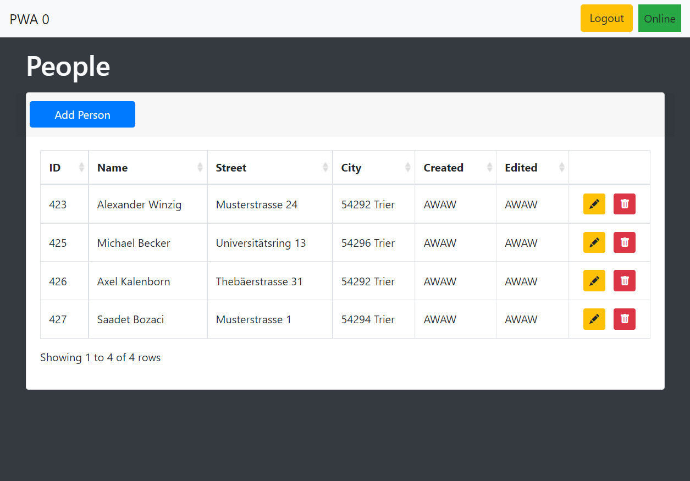
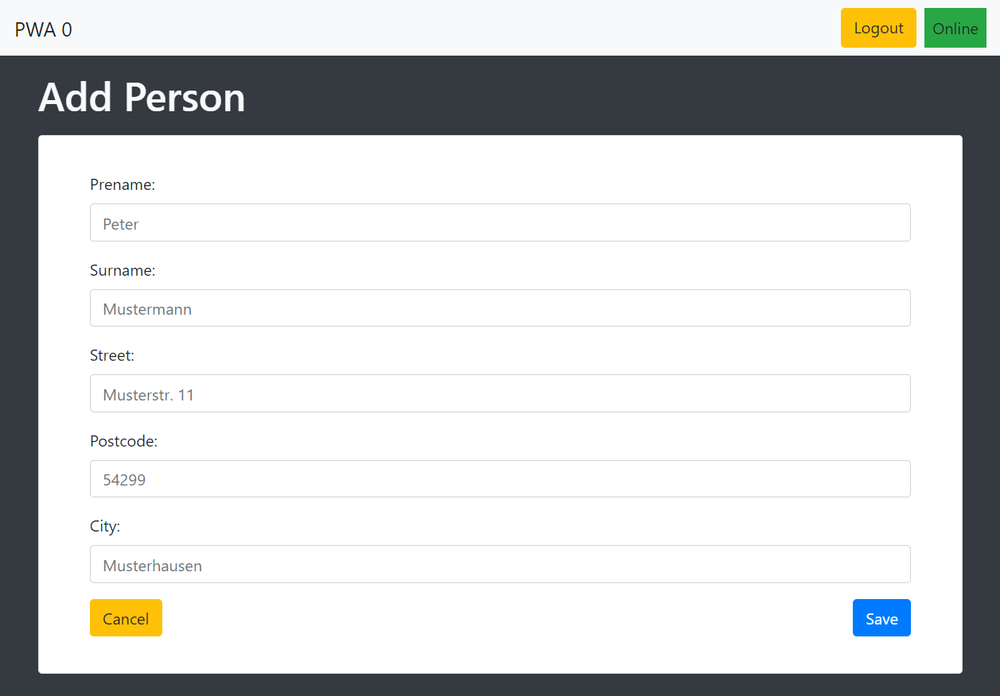

Grundlegende Webanwendung
Bevor eine eine PWA erstellt werden kann, muss als erstes eine grundlegende Webanwendungen entstehen, die den Inhalt enthält, der später den Besuchern/Nutzern der Webseite dargeboten werden soll. Das Beispiel der Personentabelle hat, wie viele Webanwendungen, einen Login sowie eine vorherige Registrierung. Dort muss neben der Angabe von E-Mail-Adresse und Passwort auch ein vierstelliges Token angegeben werden.Nach erfolgreichem Login mit E-Mail-Adresse und Passwort findet eine Weiterleitung auf die Seite der Personentabelle statt. Diese enthält die von allen Benutzern hinzugefügten Personen.   Über den blauen Button "Add Person", der sich links oberhalb der Tabele befindet, kann eine neue Person mit den erforderlichen Attributen zu der Tabelle hinzugefügt werden. Dabei wird das Attribut "Created" automatisch mit dem Token des eingeloggten Nutzers besetzt, der die Person erstellt. Des Weiteren ist es möglich, eine Person aus der Tabelle über den Stift auf gelbem Hintergund zu bearbeiten oder über den Eimer auf rotem Hintergrund zu löschen.
Oberhalb der Tabelle befindet sich eine Anzeige, ob der Nutzer aktuell offline oder online ist sowie die Möglichkeit für einen Logout. Die online/offline-Anzeige ist jedoch noch ohne Funktion, da die grundlegende Anwendung keinerlei offline-Funktionalität bereit stellt.
Wird eine Person bearbeitet, so wird das Token des Nutzers, der die Person bearbeitet hat, automatisch in das Feld "Edited" eingesetzt. Die Masken von "Add Person" und "Edit Person" haben den gleichen Aufbau.
Datenbank
Die Datenbank des Beispiels besteht lediglich aus 2 Tabellen, den User (Nutzern) und den Persons (Personen). Die Nutzer sind dabei diejenigen, die sich auf der Webseite registriert haben. Die Personen werden durch die Nutzer zur Personentabelle hinzugefügt und besitzen, anders als die User, keinen Login.Spalten der Personen
- ID: Jede Person hat eine einzigartige ID, die vom Datenbanksystem automatisch vergeben wird
- Tea
- Milk